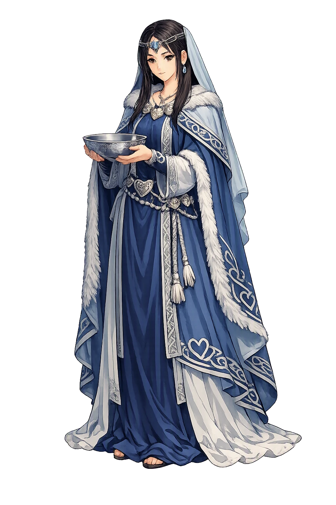
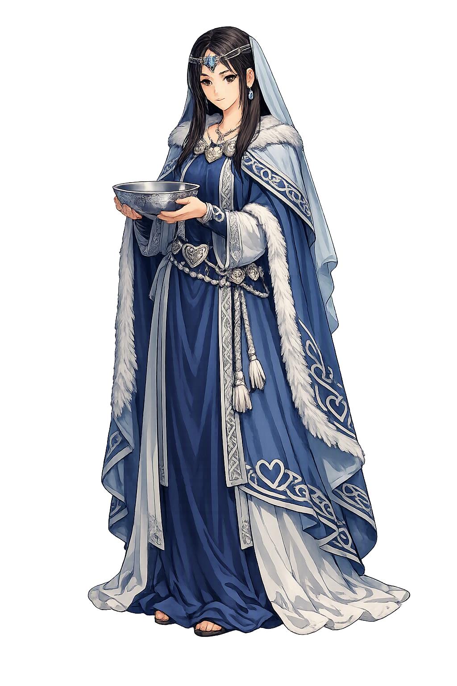

Unicode restoration and ASCII comparison
ᛋᛁᚴᚢᚾ
The name in its original Norse form. Sigyn (ᛋᛁᚴᚢᚾ) is attested in the source tradition — “Victorious girl-friend”. Its original diacritics and script distinctions carry the full phonetic and orthographic weight of the source tradition.
sigyn
The plain sigyn form is identical to the Unicode restoration. Because this name is already written in Latin letters, no diacritics, stress, or script information were lost — only capitalization differs.
Sigyn
The Unicode restoration does not need to recover lost marks for Sigyn. Its value is canonical spelling and consistent cataloguing, not the reconstruction of erased orthography. The domain is readable as-is to both DNS and humanity.
Sigyn.com → sigyn.com
The non-ASCII characters in Sigyn are encoded while the ASCII remains visible. To the DNS, it is Punycode. To humanity, it is Sigyn.
How Sigyn travels from ancient script to the modern URL
Owned, ideal, and ASCII forms of Sigyn
Sigyn
Restores ᛋᛁᚴᚢᚾ. The full Unicode restoration. sigyn.com is not in the PuniCodex collection — it is watched for release; if it drops, this temple upgrades to an owned flagship.
How Sigyn was spoken
The Wife Who Holds the Bowl
Sigyn is the wife of [[loki|Loki]] and the mother of his human sons — and the most patient figure in the whole Norse corpus. When the Æsir bound Loki beneath the earth for the death of Baldr, and [[skadi|Skaði]] fastened a venom-snake above his face, Sigyn took her place beside him with a basin, catching the poison drop by drop. Only when the basin fills and she turns away to empty it does the venom fall on Loki's face — and then he writhes so hard that the whole earth shakes, and men call it an earthquake.
The bowl Sigyn holds above Loki's face, catching the snake's drip — the one mercy in the whole binding scene, and it is hers alone.
When the basin is full she must turn away to empty it; for those moments the venom falls unchecked — the gap in mercy, measured in drops.
The three slabs — under shoulders, loins, and knees — to which Loki was bound with his own son's entrails turned to iron: the fixed point of her vigil.
Loki's writhing when the venom strikes: 'then he writhes so hard that all the earth shakes — those are now called earthquakes.'
Stories of Sigyn
Sigyn's dossier is small and strangely old: a naming in Snorri's catalogue of the gods, a kenning from a skald of Harald Fairhair's age, one stanza in the oldest poem of the Edda, and then the scene that made her immortal — the binding of Loki, where she does the only thing left to do and does it forever. The tradition never gives her a word to say. It gives her a bowl.
Snorri names her in the survey of the Æsir with his usual economy: Loki's wife is named Sigyn, and their son is Nari or Narfi. That is the whole introduction — no father, no hall, no office. The same catalogue gives Loki his other family: the giantess [[angrboda|Angrboða]], who bore him the wolf [[fenrir|Fenrir]], the World Serpent, and [[hel|Hel]]. Between the monster-brood and the human sons stands Sigyn, the wife within the walls of Ásgarðr.
That she was already Loki's established wife long before the Eddas were written is proven by the skalds: Þjóðólfr of Hvinir, composing Haustlöng around the year 900, calls Loki 'farmr Sigynjar arma' — the burden of Sigyn's arms — a kenning that works only if every listener already knew whose arms held him. The ásynja þulur preserved with Skáldskaparmál keep her in the catalogue of the goddesses by name.
The seeress of Völuspá, the oldest and greatest poem of the Codex Regius, sees the punishment before it happens: a captive lying under the grove of kettles, something evil-minded in form like Loki — 'and there sits Sigyn, by no means happy about her husband. Do you understand yet, or what more?'
The stanza is the whole of her eddic portrait, and it is enough: seated, sorrowing, and staying. A generation of readers has noted what the seeress does not say — that Sigyn is anywhere else. In the oldest witness the tradition has, she is already at her post.
Lokasenna ends in a prose coda as brutal as anything in the corpus. Loki, who has slandered every god and goddess at Ægir's feast, is caught and bound across three stones with the entrails of his son Nari, while his other son Narfi is turned into a wolf. [[skadi|Skaði]] takes a venomous snake and fastens it above his face, so that the venom drips down.
Then the prose gives Sigyn her scene: she sits there and holds a basin under the dripping venom, and when the basin is full she goes to pour it out — but while she is gone the venom drips into Loki's face, and he writhes so hard that the whole earth shakes. Those, the text says, are called earthquakes. There he lies bound until Ragnarök — and there, the prose implies, she stays.
Snorri sets the same scene at the end of the Baldr cycle, with fuller stagecraft. After the death of [[baldr|Baldr]] the Æsir hunt Loki to Franangr's falls, where he hides in the shape of a salmon and is caught in the net he himself invented. His son Váli — not [[odinn|Óðinn]]'s son of the same name — is changed into a wolf and tears apart his brother Nari; with Nari's entrails the gods bind Loki across three stones, and the bonds turn to iron. Skaði fastens the poison-snake above his face.
And Sigyn, his wife, stands beside him and holds a basin under the dripping venom. When the basin is full she carries it out and empties it; meanwhile the venom falls on Loki's face, and then he writhes so hard against the bonds that all the earth shakes — 'those are now called earthquakes.' Snorri's account and the Lokasenna prose swap which son is gutted and which is made a wolf; they do not differ on the wife with the bowl.
Sigyn is the Edda's one study of fidelity without hope. Every other loyalty in the corpus has a horizon: vengeance will come, the ransom may succeed, Ragnarök will end it. Hers has none — the binding is until the world's end, the snake does not sleep, the basin fills at the same rate forever. And the tradition is pitilessly exact about the terms of her mercy: it is not that she fails. It is that she must sometimes put the bowl down.
Enter Extended Lore